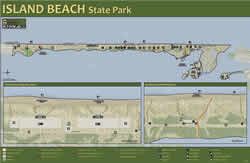

Shaped by storm and tides, Island Beach State Park is a narrow barrier island stretching for 10 miles between the restless Atlantic Ocean and the historic Barnegat Bay. Island Beach is one of New Jersey's last significant remnants of a barrier island ecosystem that once existed along much of the coast and is also one of the few remaining undeveloped barrier beaches on the north Atlantic coast. Over 3,000 acres and 10 miles of coastal dunes remain almost untouched since Henry Hudson first described New Jersey's coast from the ship, the Half Moon, in 1609.
Miles of sand dunes and white sandy beaches offer habitat to maritime plants and diverse wildlife that is almost the same as it was thousands of years ago. Island Beach contains outstanding examples of plant communities such as primary dunes, thicket, freshwater wetlands, maritime forest and tidal marshes. The state's largest osprey colony calls our park home and they welcome a wide variety of visiting birds including peregrine falcons, wading birds, shorebirds, waterfowl and migrating songbirds. Island Beach is nationally known as a unique resource with over 400 plants identified, including the largest expanses of beach weather in New Jersey.
Through the Carry-In/Carry-Out Program you can help us keep the parks clean and beautiful by carrying out the trash you carry in. Please bring a biodegradable bag with you when visiting to take your trash home. Thank you for your cooperation and remember to recycle.
Island Beach State Park facilities are partially accessible for people with disabilities. The Fisherman's Walkway is a boardwalk that provides access to both the ocean and bay at parking Area 7. Beach wheelchairs for the ocean swimming area and beach wheelchairs that have been specially fitted for surf fishing are available at the pavilions during the swimming season and at the park office during the remainder of the year. Contact the park office for further information regarding disability access. Text telephone (TT) users, call the New Jersey Relay Service at (800) 852-7899.
Governor's executive order reopening parks
- Parks re-open Saturday, May 2
- Passive use only
- Social distancing required
- Face covering strongly encouraged
- Parking reduced 50%
Visit https://njparksandforests.org/sps_covid.html for the most recent information on park operations — some amenities are not available at this time.
WE ARE ALL IN THIS TOGETHER
To keep your family and our entire New Jersey family safe, stay home, practice good hygiene and follow all State and CDC guidelines concerning COVID-19.
MORE INFO
To learn more about COVID-19 or find resources, go to https://www.COVID19.NJ.GOV, text NJCOVID to 898-211, or call 211.
For updated parks information, please follow www.facebook.com/newjerseystateparks
- or -
Visit the Division of Parks and Forestry’s website: https://njparksandforests.org
- Park hours: 8:00 a.m. - 8:00 p.m.
- Fishing hours: 5:00 a.m. - 8:00 p.m.
- Restrooms at Swimming Area 1: 9:00 a.m. - 6:00 p.m.
- All other restrooms closed.
- Office closed.
Beach Cam on OBA-1 courtersy of The Friends of Island Beach State Park
Tent-Canopy Advisory
Visit the “original” Jersey Shore, untouched and unspoiled - Island Beach State Park as featured on WNEP Home and Backyard show

 Island Beach Trails Map (PDF file 1MB)
Island Beach Trails Map (PDF file 1MB)

The Island Beach State Park Discovery Trails System provides a self-guided experience through the nine plant communities of a barrier island. Wayside exhibits located along each trail interpret the natural and cultural stories of the park. There are a total of 8 trails, each under one mile. For a copy of the Discovery Trails brochure and map, please contact the Park Office.
Horseback riding is permitted at Island Beach State Park from October 1 through April 30. There are six miles of ocean beach in the southern and central portions of the park available for equestrian use and a parking area is designated for horse trailers during this time period. Reservations are required by contacting the park office at (732) 793-0506.
Ten miles of pure white sand beach attract swimmers, sunbathers, anglers and surfers. Modern bathhouses, beach access ramps, a mile of beach with lifeguards, historic buildings, trails, interpretive programs, bike paths and facilities for people with disabilities combine to make Island Beach a unique place to explore.
The bayside of the island is a nutrient-rich feeding ground for birds, fish and other wildlife. Naturalist guided canoe and kayak tours during the summer months take participants through the Sedge Islands where they can observe a wide variety of wildlife, including nesting ospreys, falcons and wading birds. Bird observation blinds give visitors the opportunity to view the wildlife in this very important habitat.
Together, these two natural areas encompass one of the few remaining undeveloped barrier beaches in the northeast United States. Rolling sand dunes, salt-sculptured vegetation, lush green salt marshes, and nine plant communities including a nationally significant maritime forest characterize Island Beach. The federally threatened piping plover is an occasional inhabitant of the open beaches and dunes. Access to portions of the Northern Natural Area is restricted.
Please note: Special use permits are subject to review and approval by the park.
Special Use Permit Application Package
A Special Use Permit is utilized to accommodate a specific activity or event being conducted over a short duration. There are two types of special use permits: Non-Commercial and Commercial and fees are based on NJ residency and Non-residents. A completed application must be submitted to the park/forest area where the activity or event is being held at least 90 days prior to the event. If the special use or event is extremely large or complex, at least one-year’s prior notice is recommended.
From Memorial Day Weekend through the first of October, pets are not permitted on the Ocean Swimming Beaches (lifeguarded areas). Pets are permitted South of the Ocean Swimming Areas during this time period but must be held on a leash (maximum length - 6 feet) and you must clean up after your pet. Pets are not permitted on the Spizzle Creek Bird Blind Trail at any time.
Island Beach State Park is well known by New Jersey's saltwater anglers for excellent surf fishing for striped bass and bluefish. Other species include summer flounder and weakfish. During the appropriate season, fishing for tautog along the north jetty of Barnegat Inlet is especially rewarding. Bait and fishing information may be obtained at local tackle dealers before entering the park. Saltwater fishing is subject to New Jersey Division of Fish and Wildlife and State Park Service regulations. Information regarding saltwater fishing regulations can be found in the Fish and Wildlife Digest, which is available at local tackle dealers.
To limit the spread of COVID-19, Mobile Sportfishing Vehicle permits to operate 4-wheel drive vehicles on the fishing beaches may only be obtained through the mail. Download an Annual Mobile Sportfishing Permit application
| New Jersey Resident $75.00 Non-Resident $90.00 |
3-Day Permit |
| New Jersey Resident $195.00 Non-Resident $225.00 |
Annual Permit |
| Replacement Fee $25.00 | Annual Permit |
Issued decal should be treated as cash. It will not be replaced if lost or stolen.
The SPS will continue to offer a replacement decal for $25, only upon presentation of paid receipt and the old decal, regardless of the condition.
The MSFV Permit:
- Will be issued only to the registered owner of the vehicle – the name on the license and registration must be the same.
- Leased vehicles must bring their lease paperwork.
- Company owned vehicles must show proof of ownership. A business card will be accepted, as long as it states “owner” or “president”.
- All documents must have a current, valid date.
MANDATORY EQUIPMENT FOR A MOBILE SPORTFISHING VEHICLE (MSFV)
Permits are issued to 4-wheel drive vehicle owners for fishing purposes only. Carrying the basic equipment listed is required whenever the MSFV is on the beach.
- Fishing equipment and bait and tackle for each person over 12 years of age
- Tire gauge
- Spare tire
- Workable jack and board/support for jack in sand (3/4 in. x 12 x 12 in. plywood square minimum size)
- Tow chain or snatch line
- Shovel
- Flashlight
- Fire extinguisher
- Auto first aid kit
- Litter/trash bag
- Minimum of 1/4 tank of fuel.
Is Closed for the Season.
Swimming is only permitted when lifeguards are on duty from 10 am to 6 pm.
Approximately one mile of designated ocean bathing beach is located in the central portion of the park. During the period from mid-June through Labor Day, this bathing beach is staffed with lifeguards who are trained in ocean lifesaving and first aid techniques. Please check our swimming schedule prior to your visit. Nearby are parking areas and bathhouse pavilions with changing areas, first aid stations, and concessions.
Personal Flotation Devices are not permitted to be used in the Ocean Bathing Areas.
A new lifeguarded swimming area will be open this summer season near A-7, north of the Fisherman’s Walkway access point. A $3 walk-in fee (free for children under 3 years old) will be assessed for those who enter the park at Fisherman’s Walkway adjacent to Tices Shoal while lifeguards are on duty.
Although tables and grills are not available in the park, visitors may enjoy picnicking on the ocean beach. Grills may be used on the beach south of the designated bathing area. Fires must be at least 50 feet east of the dunes, and picnickers are required to extinguish their fires before leaving the area. Island Beach State Park requires visitors to "Carry In/Carry Out" their garbage.
A designated bicycle path is located along more than 8 miles of the main road. Six miles of ocean beach in the southern and central portions of the park are available for equestrian use from October 1 through April 30. A parking area is designated for horse trailers during this time period. There are no horse rental facilities in or near the park. Please contact the park office for further information.
Portions of the ocean beach at the extreme southern end of the designated bathing area have been set aside for sailboarding and surfing. For further information, please contact the Park Office.
Scuba diving and underwater fishing are permitted along 2.5 miles of ocean beach just north of Barnegat Inlet. Scuba divers must register at the park office just prior to their first dive each year. Proof of current diving certification is required. Spear and underwater fishing are subject to New Jersey Division of Fish and Wildlife regulations. Diving in Barnegat Inlet is permitted and subject to New Jersey Boating Commission Special Regulations.
Island Beach State Park's natural sand dune formations and relatively undisturbed vegetation create a unique outdoors experience to study a barrier island ecosystem. School groups that are interested in visiting the Park for self-guided tours must make advance reservations. For more information, please call the Park Office at (732) 793-0506.

The Sedge Island Marine Conservation Zone contains approximately 1,600 acres of highly productive tidal marshes, creeks, ponds, and open water. The purpose of the Conservation Zone is to protect and interpret the wildlife resources while reducing user conflicts and maintaining the traditional uses of the area. Canoe and kayak tours are offered by Park's interpretive staff. For more information regarding the Conservation Zone, please contact the Park Office.
- Sedge Island Marine Conservation Zone Administrative Order #2014-09 (pdf)
- Map of Sedge Island Marine Conservation Zone
The Emily DeCamp Herbarium is a collection of approximately 400 plants that have been classified and preserved, giving the public an opportunity to learn about the nine plant communities at Island Beach State Park. One of the main attractions of this herbarium is that the visiting public and scientists are able to handle and examine individual plants. Plants have been placed in a protective mount that also gives historical and factual information about the plant. The herbarium is kept at the Forked River Interpretive Center.
Two Coast Guard stations from 1901 and 1938; New Jersey's largest osprey colony. Excellent location to study barrier island plants, see a red fox or observe migrating birds in May and October. Surf chairs and ramps at Ocean Beach Area-1, Ocean Beach Area-2 and Area-7 to assist people with disabilities to fish or reach the water's edge.
State Park Service areas open to hunting
Hunting is permitted in designated areas within the park and is subject to Division of Fish and Wildlife regulations.
• New Jersey Beach Buggy Association
| When is the best time of year to observe migrating waterfowl? | May and October |
| When is the best time of year to go surf fishing? | Fall |
| What time of year does the Beach Heather bloom? | May |